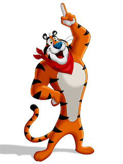
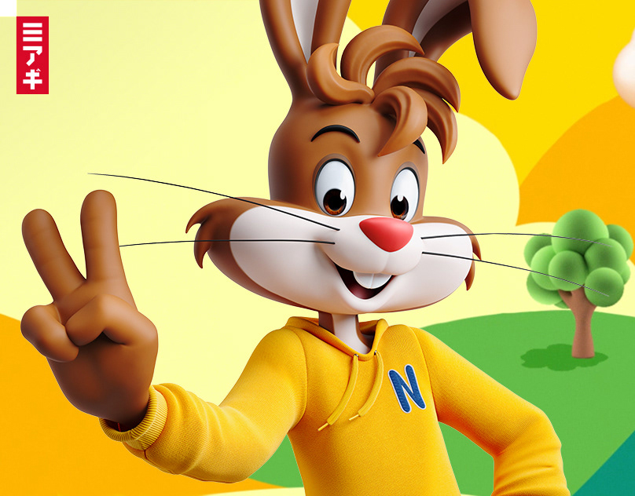
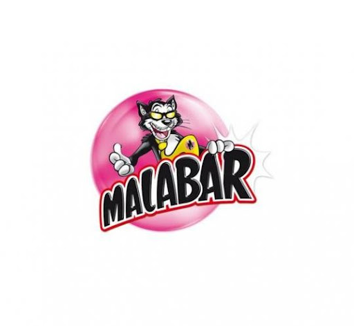
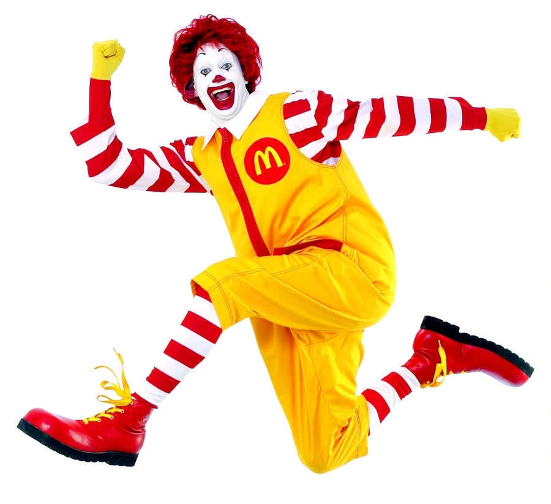

LES MASCOTTES
Bienvenue sur cette page où nous racontons l’histoire des mascottes des marques que nous consommons le plus!
Tout d’abord, qu’est-ce qu’une mascotte ?
Une mascotte est un objet ou un être vivant (animal, personnage, objet animé) qui représente un groupe, une entité ou une entreprise. Utilisé par Frédéric Mistral au XIXe siècle comme dérivé du mot provençal mascoto, le mot mascotte signifiait à l’origine “sort”. Nous définissons ici la première mission de la mascotte : porter chance. En conjurant le mauvais sort, ce personnage imaginaire protège le groupe et apporte la victoire. En plus de sa fonction historique de porte-bonheur, la mascotte permet un processus d’identification immédiat de psychologie relationnelle. C’est un outil très efficace pour donner une dimension humaine et chaleureuse à une institution, un produit ou un concept. Selon Jean-Claude Boulay (sémiologue) : “Une mascotte peut transmettre de l’affection à travers une personnification et induire la confiance en créant un lien et une complicité”. En effet, dans le subconscient de l’individu, elle crée une attitude positive envers le groupe représenté. Partie intégrante de l’identité visuelle d’une marque, la mascotte est idéale pour promouvoir une marque, l’ancrer dans l’esprit des consommateurs et prendre vie à travers différents supports, une histoire ou une personnalité.
Nos mascottes alimentaires préférées
Mascotte Kellog's
Tony le Tigre est la mascotte de tigre anthropomorphe de bande dessinée publicitaire pour Frosted Flakes (aussi connu sous le nom de Frosties) céréales pour le petit déjeuner, apparaissant sur son emballage et la publicité. Après l’original Kellogg Company a créé son entreprise céréalière nord-américaine à la fin de 2023, la mascotte est détenue par WK Kellogg Co aux États-Unis, au Canada et dans les Caraïbes et par Kellanova dans le reste du monde. Tony a également été la mascotte de céréales connexes telles que les Cinnamon Krunchers de Tony et Tiger Power. Depuis les débuts de Tony en 1952, le personnage a traversé plusieurs générations et est devenu un petit déjeuner icône de céréales.
Mascotte Nesquik
Quicky est la mascotte internationale de Nesquik depuis 1973. Il a remplacé la mascotte francophone Groquik en 1990 pour des raisons commerciales, Groquik donnant une mauvaise image au produit, car les gens auraient pu croire que Nesquik rendait gros. Il s'agit d'un lapin au pelage marron et blanc habillé en jaune et portant, en France, un collier orné d'un N bleu marine.
Mascotte Malabar
L'arrivée de cette nouvelle mascotte, le chat Mabulle, n'a pas fait que des heureux. Les fans de la première heure sont vent debout sur les réseaux sociaux. Certains iront jusqu'à dire que la marque a tué leur enfance.Mais que les fans se rassurent, le goût original existe toujours et surtout, on y retrouve les célèbres tatouages en décalcomanie qui ont fait la joie des enfants depuis plusieurs décennies.
Mascotte Nesquik
Ronald McDonald est un personnage de fiction et la mascotte de la chaîne de restauration rapide McDonald's entre 1963 et 2009.Une troupe entière de personnages issus du « Ronald Land » a été développée, pour accompagner Ronald : on a pu voir des personnages ressemblant à des hamburgers et d'autres sans forme particulière. Aujourd'hui, avec le Marlboro Man et Géant Vert, Ronald McDonald est l'une des trois icônes publicitaires les plus connues dans le monde1. Celui-ci parle rarement ; toutefois, en France c'est le comédien Didier Gircourt qui lui a prêté sa voix.